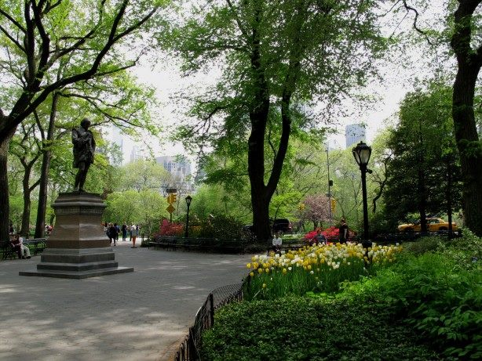
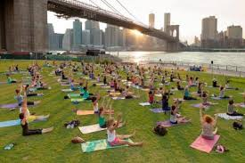

Central Park, coving the entire center of Manhattan, is an outdoor workout heaven with paths for walking, running, cycling , dancing, and many more activities. A spot I use in the OPark for an outdoor workout is a flat area with a big tree in the middle, near the 84th street entrance. The tree is for fastening your resistance band.
A spot for a different kind of workout is the TANGO place near the East 68th street entrance to the Park: a small plaza with the Shakespeare statue in the middle. If you know how to and have a dance partner, an hour of tango burns more calories than most cardio exercises. It is also a lot more fun than walking on a band that goes nowhere.
Roosevelt Island is one place in NYC where you can walk, or run, 5 miles without having to stop and start due to traffic lights. The walking path around the island takes about 75 minutes at the very comfortable pace of 15 minutes/mile. The added benefit is breathing in sea air instead of auto exhaust.
This spot is on the north side of the island next to the soccer field between the two residential complexes of Mahattan Park and the Octagon. The area has some calistenic equipment that you can use. You can also use a resistance band tied to one of the trees. You will need a mat for your planks and crunches.
As the largest of the five boroughs, Queens has much to explore. A great place for outdoor workouts is the Socrates Sculpture Park which is across the river from Roosevelt Island. This is a small and rather serene place more conducive to yoga or pilates under the trees. In the summer months, there are free yoga and tai chi classes on Sundays. The park also has nice quiet corners overlooking the river for reading or just thinking.
Hallets Cove is just north of Socrates Park. If you like water sports, and know how to kayak, this is the place for you from June to September. You need to sign up for the first come first served list. You do not need to be a proficient kayaker - you can start learning here. they also allow your dog to come with you and will provide the four-legged guy a life jacket just in case!
To walk the span of the Big Apple bridges is a must. Especially the Brooklyn Bridge. The walk takes about 30 minutes. Great views along the way. Only drawback: noise of the traffic on the bridge. The park off the bridge on Booklyn side has lots of activities like yoga or tai chi when the weather permits.
Fewer people take advantage of this park even though it is larger and older than the more famous Central Park. Plenty workout friendly areas, paths, and trails to enjoy.